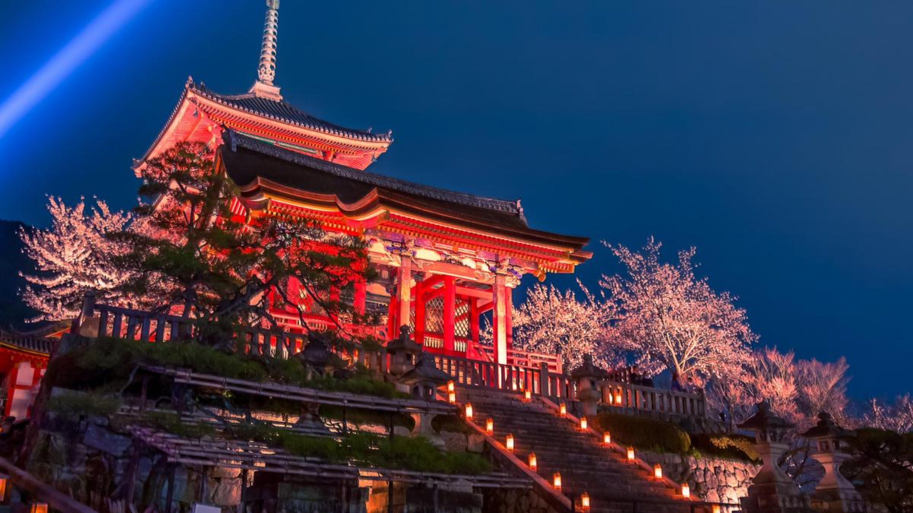
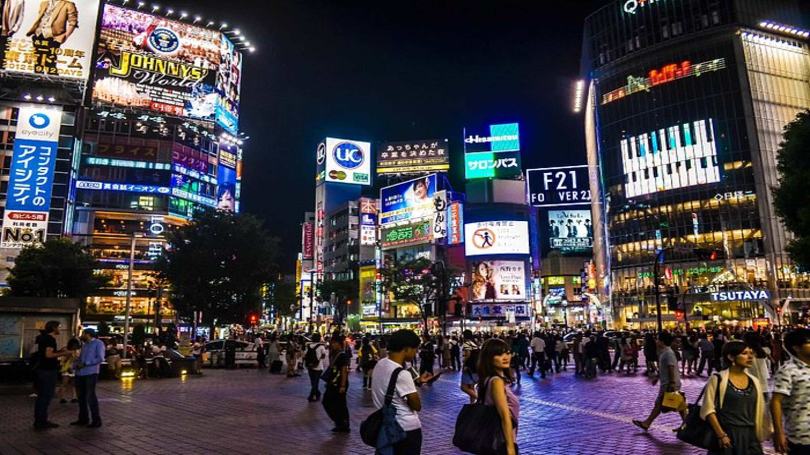
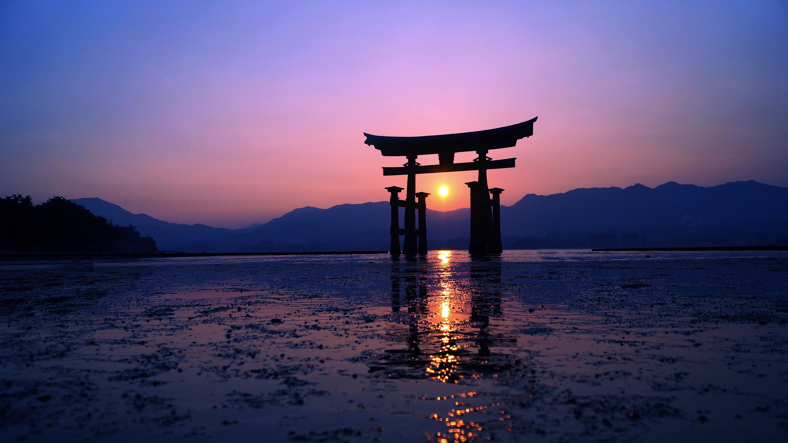
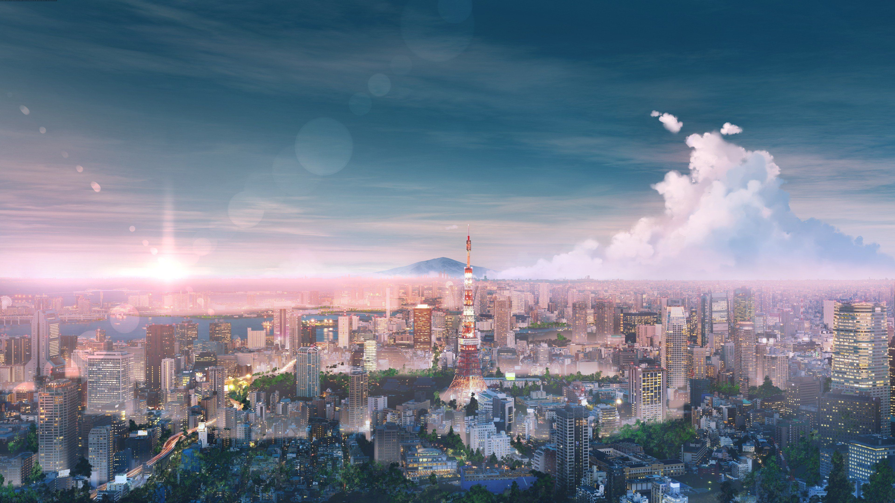

JAPON

Templo Byodo-In
El Templo Byodo-In es un templo budista no confesional ubicado en el Parque Memorial del Valle de los Templos.

Shibuya
un barrio especial de la Metrópolis de Tokio, en Japón.

Eikan-dō Zenrin-ji
El templo principal de la rama Seizan de la secta budista japonesa Jōdo-shū, ubicada en Kioto, Sakyō-ku.

Torii de Miyajima
Ancestral santuario sintoísta, uno de los más venerados de Japón, que parece flotar sobre las aguas cuando sube la marea.

Tokio
Una foto donde se puede ver la ciudad de Tokio, principalment la Torre de Tokio.